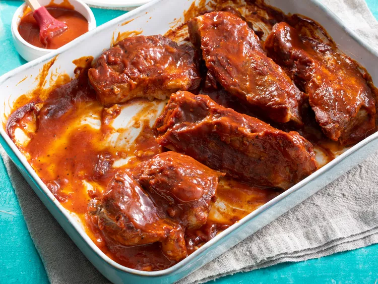

Simple BBQ Ribs

Description
All you need are five simple ingredients to make these tasty BBQ ribs.
They are so tender and full of flavor. You will never want to look for another
BBQ rib recipe again!
Ingredients
- 2 1/2 pounds of country-style pork ribs
- 2 tablespoons of kosher salt
- 1 tablespoon of garlic powder
- 1 teaspoon of ground black pepper
- 1 cup of barbeque sauce
Steps
- Gather all of your ingredients.
- Place the ribs in a large pot and cover with water.
- Stir in the kosher salt, garlic powder, and pepper, and bring the water
to a boil over medium heat. Continue boiling for 40 to 45 minutes until
the ribs are tender.
- Preheat the oven to 325 degrees F while the ribs are boiling.
- Remove the ribs from the pot and place them in a 9x13-inch baking dish.
Pour the barbeque sauce over the ribs. Cover the baking dish with aluminum
foil.
- Bake for 1 to 1 1/2 hours until the internal temperature of the pork is
160 degrees F.
- Serve hot and enjoy!